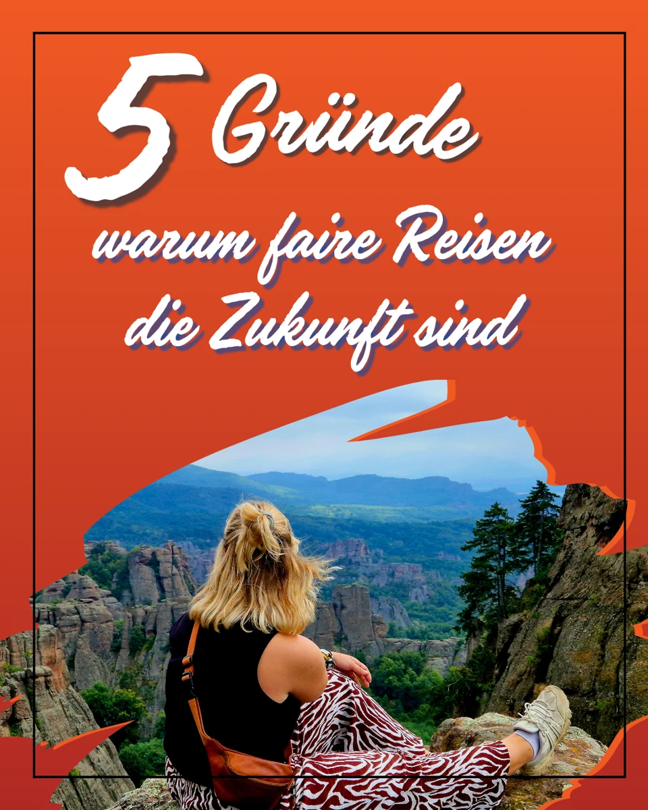
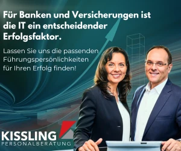
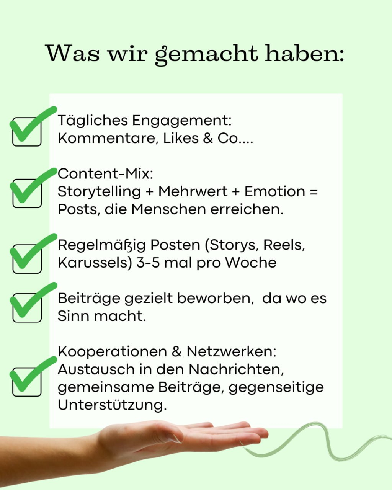
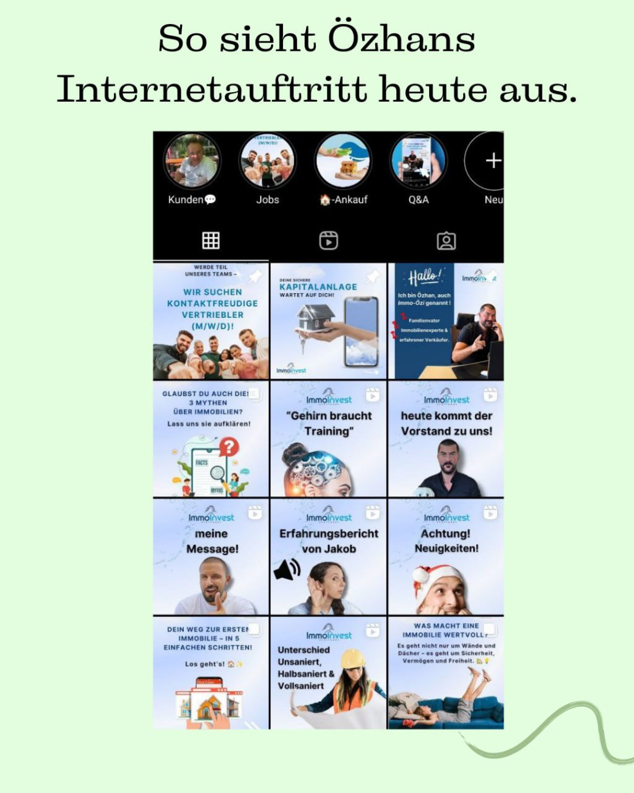

Karussell zur Reisebranche
Eine zusammenhängende Post-Serie zum Thema faire Reisen.
Alle sieben Slides ansehen ↗Ausgangslage, System und Ergebnis – transparent und ohne erfundene Zahlen.

Eine zusammenhängende Post-Serie zum Thema faire Reisen.
Alle sieben Slides ansehen ↗Ein kurzer Video-Einblick aus meinen Reel-Arbeiten. Direkt hier abspielbar.

Klare Zielgruppenansprache für die Personalberatung im Bereich Banken und Versicherungen.
Weitere Werbemotive ansehen ↗Ausgangslage: 225 Follower und ein visuell uneinheitlicher Auftritt. Ansatz: tägliches Engagement, Storytelling, Reels, Karussells, Kooperationen und gezielte Bewerbung relevanter Beiträge.




Die gelieferten Insights zeigen, wie ein einzelner strategischer Beitrag Reichweite, Profilinteresse und Follower-Wachstum gleichzeitig erzeugt hat.

Die Case-Serie dokumentiert den Weg zu einem professionellen Social-Media-Auftritt. Das gelieferte Kundenstatement nennt mehr als 10.000 Follower, regelmäßige Anfragen und neue Freude an Video-Content.
„Heute habe ich über 10.000 Follower und bekomme regelmäßig Anfragen.“
